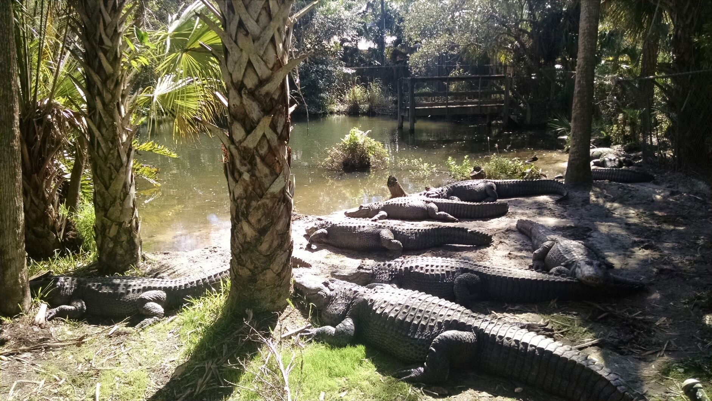
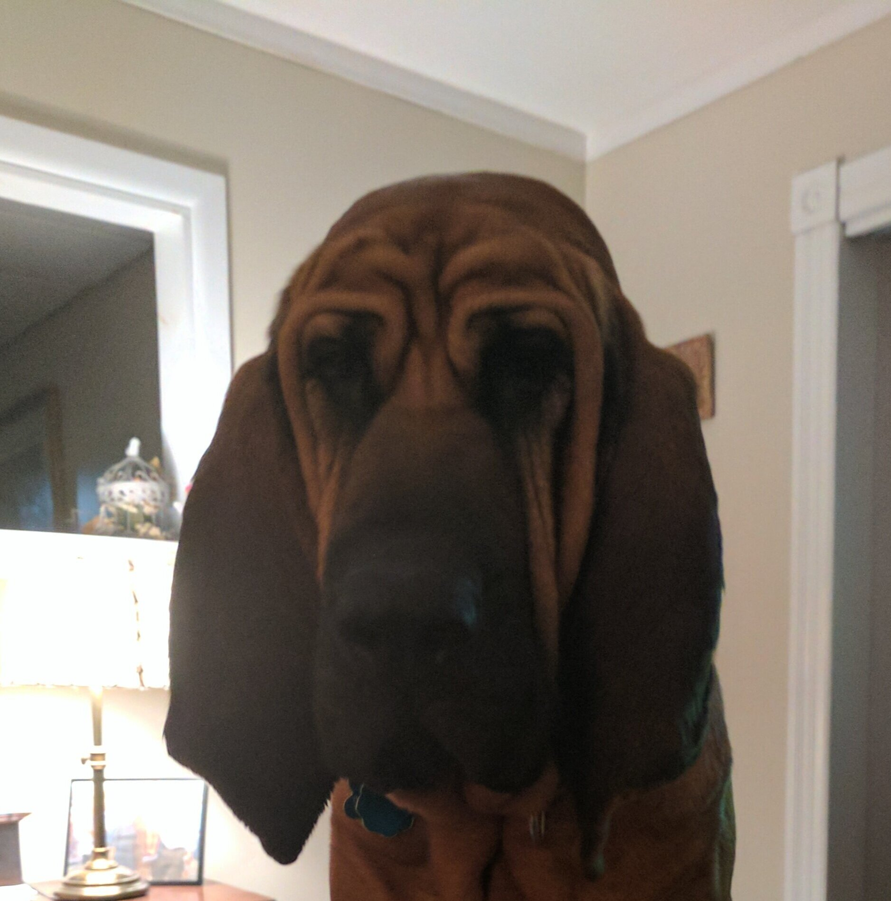

Our story begins with me washing dishes on Martha’s Vineyard Island in the summer of 1985. It continues on into the winters, working in kitchens at various ski mountains in Vermont, while attending college where I would eventually meet my wife Tracy. After graduation, all of our belongings in the trunk, we head south to Chapel Hill North Carolina with the excitement of a new place and all that it may have to offer guiding us towards the future. Soon after arriving I would connect with a renowned and accomplished Chef from Louisiana and open The New Orleans Cookery on Franklin Street to much fanfare and success. The year is 1993. My business partner and I would part ways in time, leading me to explore other positions and opportunities within the Restaurant Industry for the next six years, while Tracy pursued her career in Marketing.


In 2000, I open Tupelo’s Restaurant in Hillsborough, a small quaint community just west of Durham, North Carolina. Featuring southern classics and Creole specialty dishes refined from years of trial and error, The Restaurant enjoys tremendous success shortly after opening. Several years later Tupelo Tavern is added in a vacant space next door. New England calls our name many times during our stay in the south so when the opportunity to pass along the business to another group of eager entrepreneurs arrives, we decide to sell the business and move back to the area we both enjoyed growing up. The year is 2011. Tracy resigns as the Director of a no-kill animal adoption facility she had been running for the past seven years, Paws4Ever and I sell The Restaurant. We pack our bags, sell our house and head back north to the Connecticut River Valley to begin our next adventure. The both of us are drawn to this area in large part for its natural beauty, proximity to urban hubs, the authenticity of its residents and its small town charm. We are thankful to have found our a home in Westbrook and the good fortune to open The Blue Hound Cookery & Taproom in Ivoryton Village, Essex in 2013.